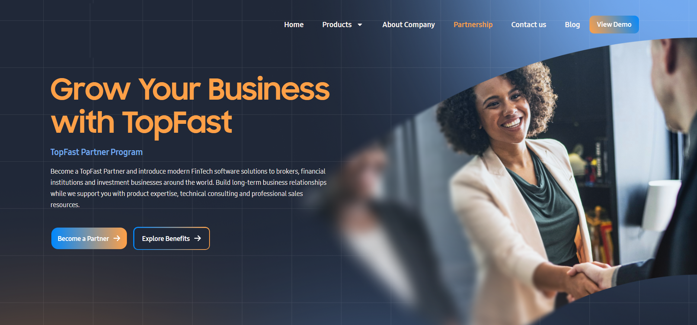

Websites / Product Work
Interactive Corporate Website & Admin Platform
A responsive corporate website with interactive customer journeys and administrative content management.

TopFast homepage: the brokerage technology ecosystem and company offering.
Product Overview
A responsive corporate website and administrative platform introducing TopFast’s technology offering and supporting its digital presence.
Audience & Experience
Interactive product and partnership journeys help visitors explore the company’s offering across desktop and mobile. Administrative management supports the maintenance of website content and customer-facing information.
Professional Context
My product-management and CPO work at Top Fast Technology connects product strategy, roadmaps and delivery across this ecosystem. The website examples show how the company presents that broader offering.
Product Screens
Explore the interfaces and workflows below.
View full image ↗

View full image ↗